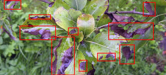

Welcome to Plant Disease Recognition System
Welcome to the Plant Disease Recognition System! 🌱 This system helps farmers identify plant diseases easily. Just upload a plant image, and our AI model will detect diseases accurately! ✅

How it Works
1. Image Upload: Farmers can upload images of affected plants to the system.
2. AI Model Analysis: Our advanced AI model, trained on a vast dataset of plant images, analyzes the uploaded image to detect signs of disease.
3. Disease Identification: The AI model identifies the specific disease affecting the plant, providing accurate results.
Key Features
1. Accuracy: Our AI model ensures high accuracy in disease detection, reducing the risk of misidentification.
2. Speed: The system provides quick results, enabling farmers to take prompt action to prevent disease spread.
3. Ease of Use: The user-friendly interface allows farmers to easily upload images and receive results.
4. Comprehensive Database: Our database includes a wide range of plant diseases, ensuring that farmers can identify and address various issues.
Benefits for Farmers
1. Improved Crop Yield: Early disease detection enables farmers to take timely action, reducing crop damage and improving yields.
2. Reduced Chemical Use: Accurate disease identification helps farmers apply targeted treatments, minimizing chemical usage and environmental impact.
3. Increased Efficiency: The system saves farmers time and effort, allowing them to focus on other critical aspects of farming.
Empowering Sustainable Agriculture
The Plant Disease Recognition System contributes to sustainable agriculture by:
1. Enhancing Food Security: By improving crop yields and reducing disease-related losses.
2. Promoting Eco-Friendly Practices: By minimizing chemical usage and encouraging targeted treatments.
3. Supporting Farmer Livelihoods: By providing accurate disease detection and improving farming efficiency.

Disease Recognition System
पौधा (Plant):
रोग (Disease):
विश्वसनीयता (Confidence): %